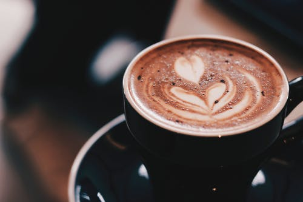

Ла́тте (англизированный и сокращённый вариант от итал. caffè latte [kaffeˈlatte] — «кофе с молоком») — кофейный напиток родом из Италии, состоящий из молока (на итальянском latte) и кофе эспрессо. Варится на основе молока, образуя в чашке или бокале трёхслойную смесь из кофе, молока и пены.
В Италии латте готовится в домашних условиях и подаётся на завтрак. Для изготовления латте используется мока и чашка подогретого молока. Чаще всего латте готовится из порции эспрессо, которая заливается как горячим, так и холодным вспененным молоком. Соотношение эспрессо, взбитого молока и молочной пены у такого напитка 1:(2 или 3):1, что позволяет получить наилучшие вкусовые, ароматические и эстетические свойства напитка.
Для придания дополнительных вкусовых ощущений, пенку латте часто посыпают добавками: корицей, шоколадом, или ореховой крошкой.